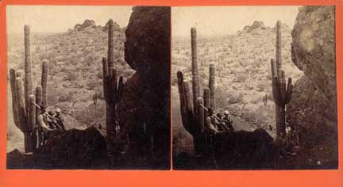
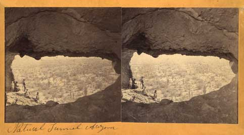
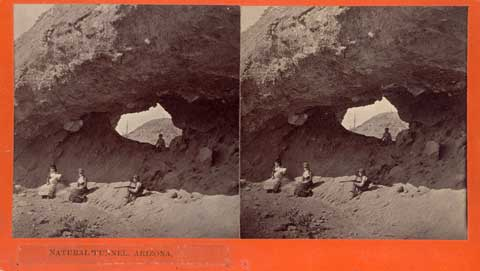

Vintage Papago Park Images from the collection of Jeremy Rowe Vintage Photography all images © 2007 |
|
Some of the earliest images of Papago Park were stereographs made in the late 1880's by J. C. Burge. This image is looking S fomr the butte near McDowell and Galvin Parkway. The subject is a vistorian genre tableau of an armed man protecting two women from a renegade hiding just below the cactus at teh right of the image.
|
 |
|
Stereograph of the Natural Tunnel (Hole-in-the-Rock) at Papago looking to the SW by J. C. Burge ca 1890. |
 |
| Stereograph of the Natural Tunnel (Hole-in-the-Rock) at Papago looking into the opening by J. C. Burge ca 1890. Burge cropped out the advertisement for competitor George Rothrock's photo studio in Phoenix painted just to the right of the frame in white paint on the rock wall. |  |